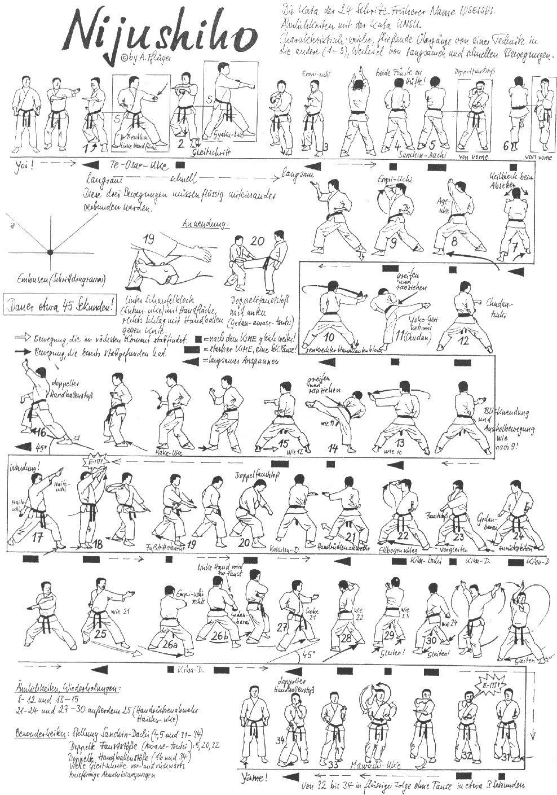

Nijushiho

- Yoi andando in Hachiji Dachi.
- Indietreggiando con la gamba Nagashi Osae Uke sinistro Hikite destro in posizione Kokutsu Dachi sinistro.
- Avanzando Yoriashi Gyaku Tzuki destro Soete.
- Salire in Hamni Dachi con il piede destro empi sinistro.
- Ruotare sul piede sinistro di 180° incrociare le mani portando contemporaneamente i pugni ai fianchi Sanchin Dachi sul posto Tzuki Jodan destro Ura Tzuki Gedan sinistro.
- Caricando il ginocchio destro sul posto eseguire Awase Uke Kamae avanzando Morote Kakiwake Uke in posizione Zenkutsu Dachi destro.
- Girare di 90° sulla sinistra con piede sinistro eseguire Age Uke Jodan sinistro Zenkutsu Dachi sul posto Age empi Jodan destro.
- Spostando la gamba destra dietro in posizione Kiba Dachi Shuto Uke destro.
- Yoko Geri Kekomi Chudan destro ritirando simultaneamente il braccio in Hikite sul posto Kagi Tzuki sinistro.
- Sul posto lentamente eseguire Shuto Uke sinistro.
- Yoko Geri Kekomi Chudan sinistro ritirando il braccio in Hikite sul posto Kagi Tzuki destro.
- Accorciare e avanzare di 45° la posizione con il piede sinistro, ruotando sul piede destro Tekubi Kake Wake destro in posizione intermedia quindi avanzare Zenkutsu Dachi destro sul posto Teisho Jodan sinistro contemporaneamente a Teisho Gedan destro.
- Ruotare guardando sopra la spalla sinistra sul piede destro su un asse di 45° Haito Jodan destro Teisho Uke Gedan in posizione Zenkutsu Dachi.
- Salendo con il piede destro Heisoku Dachi Kamae la mano sinistra sotto la destra con il dorso che colpisce mano destra (KIAI!).
- Indietreggiando con la gamba sinistra Ryocho Sukui Uke Gedan Fudodachi destro.
- Sul posto Kamae a sinistro sul posto Morote Tzuki Gedan.
- Spostare gamba sinistra di 45° ed eseguire Haishu Uke Chudan sinistro in posizione Kokutsu Dachi.
- Avanzando con la gamba destra diagonalmente di 45° eseguire Age empi Jodan destro in posizione Kiba Dachi spostamento Yoriashi a destra Soto Uke contemporaneamente Gyaku Tzuki.
- Yoriashi indietro con la gamba sinistra eseguire Gedan barai destro sempre in posizione Kiba Dachi.
- Spostando la gamba sinistra a 45° dietro eseguire Haishu Uke Chudan sinistro in posizione Kokutsu Dachi.
- Avanzando con la gamba destra di 45° eseguire empi Chudan destro la mano sinistra aperta sul gomito destro in posizione Kiba Dachi.
- Sul posto Gedan barai destro.
- Avanzare con la gamba sinistra di 90° ed eseguire Haishu Uke Chudan sinistro in posizione Kokutsu Dachi.
- Avanzando di 45° con la gamba destra Age empi Jodan destro Kiba Dachi.
- Yoriashi a destra Soto Uke destro contemporaneamente Gyaku Tzuki sinistro.
- Yoriashi indietro con la gamba sinistra eseguire Gedan barai destro sempre in posizione Kiba Dachi.
- Ruotare sul piede destro incrociare le mani portando contemporaneamente i pugni ai fianchi Sanchin Dachi.
- Sul posto Tzuki Jodan destro Ura Tzuki Gedan sinistro (KIAI!).
- Avanzando Mawashi Tekubi Kake Uke Sanchin Dachi sul posto Teisho Jodan sinistro Teisho Gedan destro.